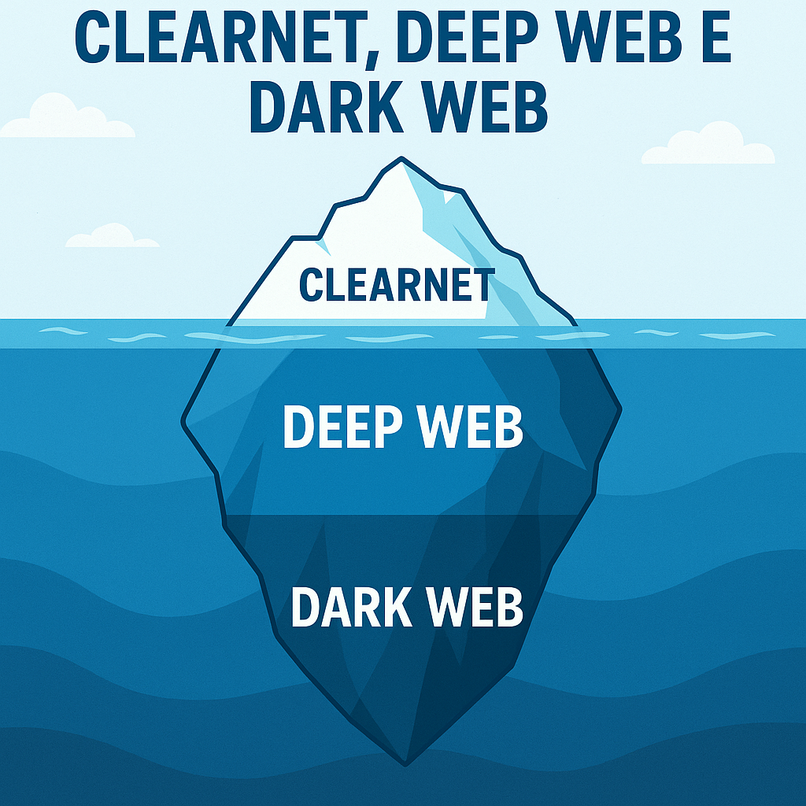
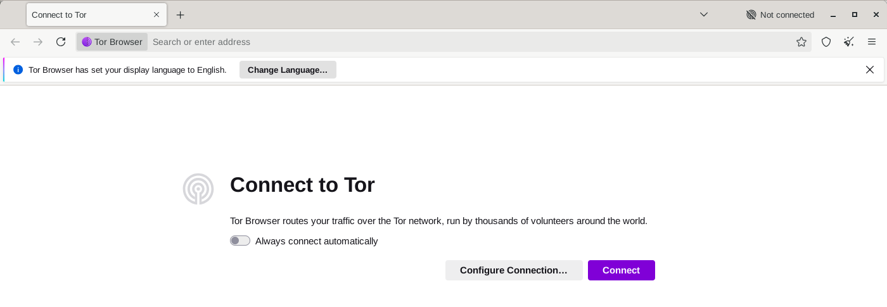
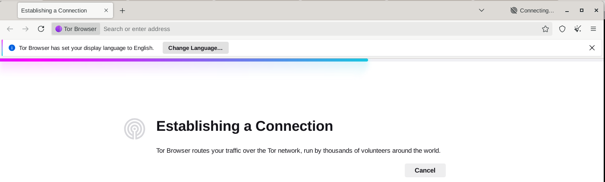
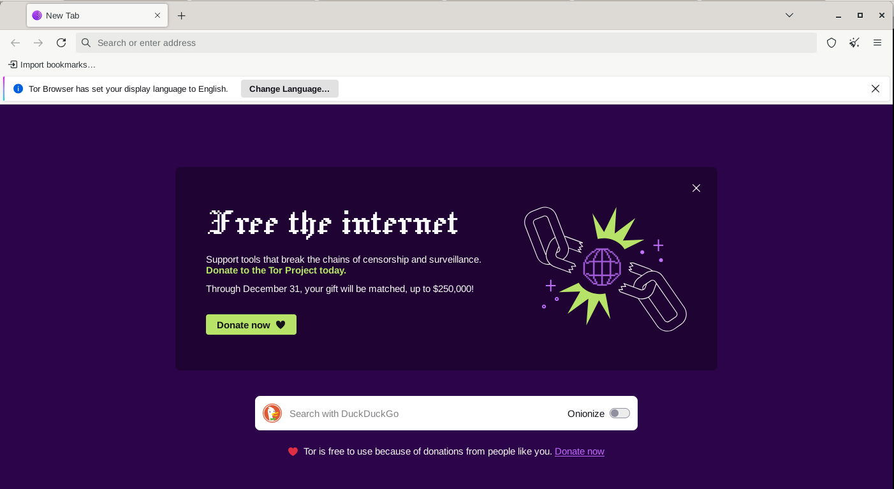
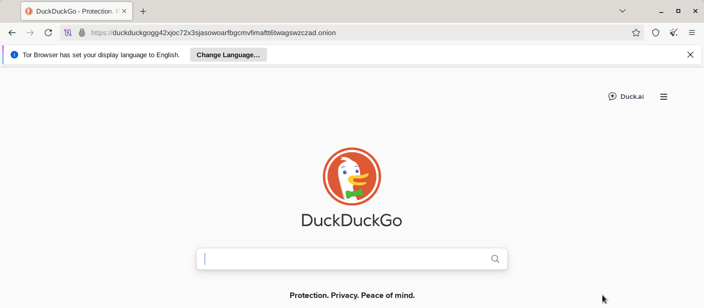

ClearNet, Deep Web e Dark Web

Obxectivo
Coñecer as diferenzas entre ClearNet, Deep Web e Dark Web, así como o funcionamento das Darknets e as ferramentas máis empregadas para acceder a elas: Tor, ZeroNet e FreeNet.
Recomendacións de seguridade
- Usar máquinas virtuais illadas (p. ex. con Kali Linux ou Tails OS).
- Non iniciar sesións persoais nin usar correos reais.
- Evitar descargas e scripts descoñecidos.
- Actualizar sempre o software Tor e o sistema operativo.
- Non confundir privacidade con impunidade.
ClearNet — Internet aberta
A ClearNet é a parte visible e indexada polos motores de busca (Google, Bing, DuckDuckGo, etc.).
Calquera usuario pode acceder con navegadores convencionais como Firefox, Edge ou Chrome.
| Característica | Descrición |
|---|---|
| Acceso | Libre, público, sen ferramentas especiais |
| Exemplo de sitios | Wikipedia, GitHub, YouTube |
| Indexación | Totalmente indexada polos buscadores |
| Seguridade/privacidade | Limitada; rastreada por cookies, IP pública visible |
Exemplo práctico:
Resposta visible: dirección IP pública, mostrando que é parte da Internet aberta.Deep Web — Internet non indexada
A Deep Web refírese a toda a información non indexada polos buscadores, pero que non é ilegal nin oculta a propósito.
| Característica | Descrición |
|---|---|
| Acceso | Requere autenticación ou coñecer a URL directa |
| Exemplo de sitios | Intranets, bases de datos académicas, contas bancarias en liña |
| Indexación | Non visible en buscadores |
| Contido | Lexítimo, útil e privado |
Exemplo práctico:
- Acceder a unha base de datos universitaria ou á intranet dun centro educativo.
- URL como https://intranet.campus.gal/aula_virtual/login
Resumo rápido
A Deep Web é maioritaria na Internet — estímase que representa máis do 90 % do contido total — e non debe confundirse coa Dark Web.
Dark Web — A Internet oculta (parte das Darknets)
A Dark Web é unha pequena parte da Deep Web que require software e configuracións específicas para acceder, e onde os sitios non usan DNS públicos nin están accesibles dende navegadores comúns.
| Característica | Descrición |
|---|---|
| Acceso | A través de redes anónimas (Tor, I2P, ZeroNet, etc.) |
| Enderezos típicos | .onion, .i2p |
| Privacidade | Elevada, cifrado extremo a extremo |
| Riscos | Contido ilegal, estafas, malware |
Exemplo práctico (Tor):
URL: http://duckduckgogg42xjoc72x3sjasowoarfbgcmvfimaftt6twagswzczad.onion
É a versión .onion de DuckDuckGo accesible só dende o navegador Tor Browser.
Precaución
Acceder á Dark Web non é ilegal, pero o contido pode selo. Emprega un contorno illado e actualizado (máquina virtual, VPN, Tor actualizado).
Darknets — Redes privadas e cifradas
As Darknets son redes superpostas (overlay networks) que funcionan sobre Internet, pero con comunicación cifrada e anónima entre usuarios.
A Dark Web vive dentro das Darknets.
| Darknet | Descrición breve | Exemplo de uso |
|---|---|---|
| Tor (The Onion Router) | Encamiña o tráfico a través de nodos anónimos (en capas) | Navegación anónima en .onion |
| ZeroNet | Rede descentralizada baseada en Bitcoin e BitTorrent | Sitios servidos polos propios usuarios |
| FreeNet | Rede P2P que almacena e distribúe contido cifrado | Compartición anónima de arquivos e blogs |
De interese
- Youtube - John Hammond - Dark Web Documentary 01 — Getting Setup with Tails Linux
Tor Browser
- Baseado en Firefox ESR.
- Encamiña o tráfico a través de tres nodos aleatorios (cifrado por capas).
- Acceso a
.onione navegación anónima na ClearNet.
Instalación en sistemas Debian GNU/Linux:
Opción 1 — Engadir repo contrib e instalar o lanzador oficial (Debian / derivatives)
-
Abre
/etc/apt/sources.listcun editor e asegúrate de incluírcontribenon-free. Exemplo para Debian oldstable: -
Actualiza e instala:
Nota: en Kali Linux os repositorios e nomes poden variar; comproba a túa versión (
/etc/os-release) antes de editarsources.list.
Opción 2 — Descargar e executar Tor Browser manualmente (universal)
- Vai a: https://www.torproject.org/download/ desde un navegador seguro.
- Baixa a versión para Linux (tar.xz).
- Descomprime e executa o lanzador local:
NOTAS
- Isto non require instalación como root; todo queda no teu directorio persoal.
- Verifica sempre a sinatura do ficheiro descargado: o Tor Project publica firmas GPG para os paquetes.
- Procedemento comprobación sinatura
Opción 3 — Usar torsocks para tráfico por Tor desde terminal (sen Tor Browser)
Se o que necesitas é enviar solicitudes HTTP(S) ou comprobar que Tor funciona, podes usar torsocks:
1) Instalar torsocks para Debian e derivados:
2) Asegurarse que Tor está a correr
Por defecto Tor abre un proxy SOCKS en 127.0.0.1:9050.
3) Usar torsocks (exemplos)
- Proba rápida con
curl:
Verás o HTML da páxina; busca texto que indique se a túa IP está en Tor.
- Abrir un navegador (uso en laboratorio; NON é tan seguro como Tor Browser):
Importante
- Usar un
navegador normalcontorsocksnon ofrece as proteccións que ten Tor Browser (fingerprinting, separación de identidade, configuración anti‑fingerprint). - Úsase só para probas básicas.
- Anti-fingerprinting é a técnica que busca evitar que o navegador ou dispositivo poidan ser identificados unicamente reducindo ou igualando a información que expoñen (axente, fontes, resolución, fuso horario, etc.), para dificultar o seguimento e rastrexo do usuario.
4) Nota sobre configuración
torsocksnormalmente detecta127.0.0.1:9050por defecto, pero podes revisar/editar/etc/tor/torsocks.confou~/.torsocks.confse necesitas cambiar o proxy.- Sempre é preferible Tor Browser para navegación anónima real;
torsocksé útil para probas e ferramentas CLI.
Uso básico
- Abrir Tor Browser

- Aceptar a conexión á rede Tor

- Navegar a enderezos
.onion


Resumo
- O paquete
toretorsocksson útiles para enrutar tráfico por Tor e para probas en terminal. - Para navegación gráfica segura emprega Tor Browser (instalalo vía
torbrowser-launcherse está disponible, ou descarga a tarball oficial). - Se non atopas
torbrowser-launcherno repo, opta por descargar directamente do proxecto Tor ou habilitarcontribensources.list. - Se se visita dende Tor Browser https://check.torproject.org, a diferencia que con
torsocksnon se exporá a túa IP real.
Comparativa xeral
| Propiedade | ClearNet | Deep Web | Dark Web | Darknets |
|---|---|---|---|---|
| Indexación | Si | Non | Non | Non |
| Acceso | Navegador normal | Autenticación | Software especial | Software especial |
| Exemplos | Wikipedia, Google | Gmail, Moodle | Tor Markets, ProtonMail .onion |
Tor, I2P, ZeroNet |
| Anonimato | Baixo | Medio | Alto | Moi alto |
| Legalidade | Legal | Legal | Variable | Legal (depende do uso) |
Recursos adicionais
- Tor Project
- ZeroNet.io (mirror comunitario)
- FreeNet Project
- Tails OS — The Amnesic Incognito Live System
Resumo final:
- A ClearNet é o visible, a Deep Web o privado, e a Dark Web o oculto.
- As Darknets fan posible ese anonimato mediante redes cifradas como Tor, ZeroNet e FreeNet.